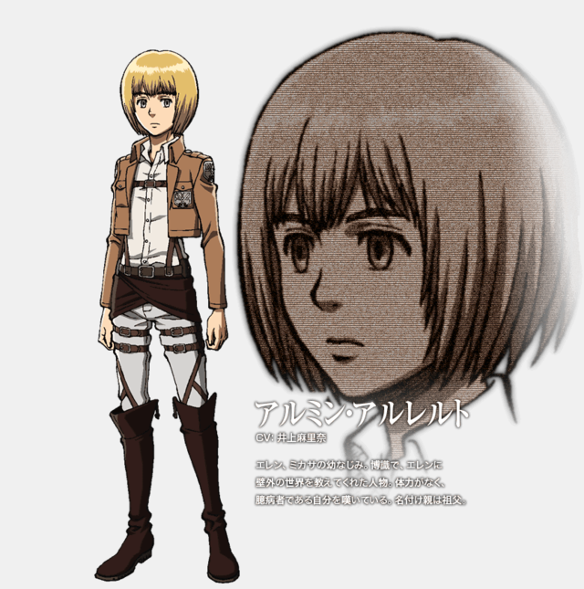
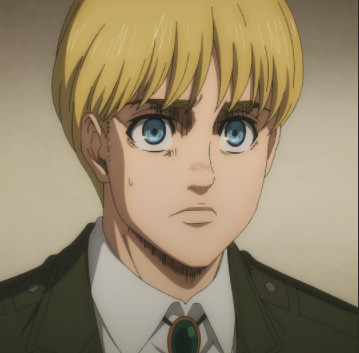

Армин Арлерт

Армин Арлерт – элитный солдат Разведкорпуса. Друг детства Эрена Йегера и Микасы Аккерман. Хоть Армин и не входит в топ 10 лучших кадетов 104-о кадетского корпуса, его интеллект и стратегический гений делают его одним из самых ценных бойцов Разведкорпуса, особенно, в паре с Ханджи Зое. После Битвы за Шиганшину он получил силу титана Бертольда Гувера и стал Колоссальным Титаном.
Внешность
Человек
Армин - довольно маленького роста для своего возраста, хоть и имеет в некоторой степени крепкое телосложение. У него европейская внешность и довольно нежные черты лица, длинные волосы, немного не доходящие до плеч, большие, выразительные, карие (голубые в аниме) глаза, тёмные брови и слегка вздёрнутый нос.
{kind=link}
В детстве Армин носил длинную голубую кофту с одной пуговицей, светлую рубашку с воротником, длинные брюки и туфли. После вступления в 104-й кадетский корпус, Армин стал носить стандартную форму кадета.
После вступления в Разведкорпус, Армин стал носить стандартную форму этой организации. Под коричневым пиджаком он носит белую рубашку. Как и его товарищи, Армин поверх формы надевает длинный зелёный плащ во время экспедиций за стены. Также, Армин носит длинные коричневые сапоги почти до колен.
К 854 году Армин чуть подрос. Черты его лица стали более мужественными. Также, он укоротил свою причёску. Он носит новую униформу Разведкорпуса под стандартным плащом.
Титан
 Форма Колоссального Титана Армина имеет более пропорциональна, чем тело Колосса Бертольда Гувера, но, как и у Бертольда, у Колосса Армина совершенно нет кожи. Он имеет тонкие и длинные руки, опускающиеся до колен, и очень мускулистые ноги с короткими стопами. Строение тела Колосса Армина позволяет ему стоять на двух ногах без каких-либо затруднений. Верхняя часть его тела также довольно тощая. Его рёбра и грудная клетка торчат прямо из плоти, на лице почти полностью отсутствует кожа, во многих местах заменённая костью. Также, он имеет глубоко посаженные печальные глаза. Вместо носа у него носовая полость, похожая на таковую у формы неразумного титана Армина, а зубы обнажены из-за отсутствия плоти на щеках. Однако, в отличие от Колоссального Титана Бертольда, Титан Армина имеет губы.
Форма Колоссального Титана Армина имеет более пропорциональна, чем тело Колосса Бертольда Гувера, но, как и у Бертольда, у Колосса Армина совершенно нет кожи. Он имеет тонкие и длинные руки, опускающиеся до колен, и очень мускулистые ноги с короткими стопами. Строение тела Колосса Армина позволяет ему стоять на двух ногах без каких-либо затруднений. Верхняя часть его тела также довольно тощая. Его рёбра и грудная клетка торчат прямо из плоти, на лице почти полностью отсутствует кожа, во многих местах заменённая костью. Также, он имеет глубоко посаженные печальные глаза. Вместо носа у него носовая полость, похожая на таковую у формы неразумного титана Армина, а зубы обнажены из-за отсутствия плоти на щеках. Однако, в отличие от Колоссального Титана Бертольда, Титан Армина имеет губы.
Форма чистого (неразумного) титана Армина была немного схожа с его человеческой формой. У него были светлые волосы, доходившие до плеч, относительно маленькое и непропорциональное тело, рот, не имеющий губ, глубоко посаженные глаза и нос, похожий на костную носовую полость человеческого черепа. Хоть его точный рост неизвестен, тем не менее, стоя на двух ногах, он был ростом с 3-этажный дом и был в состоянии поместить к себе в пасть человека целиком.
Личность
В детстве Армин был очень любознательным и мечтал увидеть мир, находящийся за стенами. Однажды дедушка показал ему книгу, в которой говорилось о внешнем мире. Он рассказал об этой книге и информации, содержащейся в ней своему лучшему другу, Эрену Йегеру. Другие дети считали Армина странным из-за того, что он интересовался внешним миром. Слишком робкий, чтобы защитить себя самому, Армин полагался на своих друзей, Эрена и Микасу Аккерман, которые защищали его от местных хулиганов. Вкупе с плохо развитой физической силой, этот факт заставлял Армина стыдиться себя и считать себя "обузой" для его товарищей. Из-за этого Армин всегда хотел показать свою ценность. В детстве он мечтал о том, чтобы быть равным своим друзьям.
Когда Армин подрос, он поступил в кадетское училище и по его завершении обучения, вступил в Разведкорпус вместе с Эреном и Микасой. Он мечтал увидеть внешний мир. Интерес Армина к внешнему миру стал главной чертой его личности с самого детства. Эта мечта помогла его стремлению уничтожить всех титанов.
Во время обучения в кадетском училище и некоторое время после выпуска самооценка Армина всё ещё была очень низкой. Армин считал себя обузой из-за своей слабой физической формы и плохих боевых навыков. Однако, вскоре после окончания обучения, Армин осознал, что стратегический склад является его главным оружием в борьбе с титанами, и с его помощью он может помочь человечеству. Позже Армин понемногу стал обретать уверенность в себе и своих силах. Тот факт, что Армин готов принести себя в жертву ради выполнения поставленной задачи, говорит о прежнем пренебрежении Армином его собственной жизни.
{kind=link}
Армин очень добр и бескорыстен. Он волнуется о безопасности своих друзей и для их спасения готов пойти на крайние меры. Когда во вермя 57-й экспедиции за стенами он, Жан Кирштейн и Райнер Браун решали, кто должен остаться без лошади, Армин не колеблясь предложил оставить его самого. Когда Жан был ранен во время отступления от Бронированного Титана, Армин пришёл ему на помощь, рискуя собственной жизнью. Хоть он и Эрен были полны решимости воплотить свою мечту и жить за стенами, Армин был готов пожертвовать своей жизнью чтобы отвлечь Колоссального Титана во время Битвы за Шиганшину. Также, Армин очень рационален и уравновешен. Благодаря таким качествам, ему всегда удаётся успокоить находящихся на пике эмоций Эрена и Микасу. Именно Армин успокоил и удержал Микасу, когда та хотела защитить Эрена от показательного избиения со стороны Леви во время военного суда.
Армин обладает аналитическим складом ума. У него прекрасно получается придумывать стратегии для решения тех или иных задач. Эти качества, в сочетании с интеллектом, рациональностью, выдержкой, способностью продумывать план на несколько шагов вперёд и инициативностью делают его великолепным тактиком и стратегом. Армин всегда пытается максимально помочь человечеству в борьбе с титанами.
Тяжёлая и жестокая жизнь сформировала в Армине устойчивый взгляд на мир. Он считает, что в столь жестоком мире, чтобы победить чудовище, достичь своей цели, или что-то изменить нужно "отбросить человечность" и даже иногда принести наивысшую жертву. Армин восхищается сильными лидерами, такими как Эрвин Смит, Дариус Закклай, Йэн Дитрих и Дот Пиксис за их способность пожертвовать своей жизнью или человечностью ради достижения цели.
Несмотря на то, что Армин принимает рациональные решения, он очень чувствительный и эмоциональный человек. Из-за своей доброты Армин часто сталкивается с проблемой выбора между человечностью или бескомпромиссностью ради достижения цели. Армин убил человека, чтобы спасти жизнь Жана, ведь это было необходимо, однако позже некоторое время одолевали муки совести. Такая доброта вкупе с излишней самокритичностью позволяют сделать вывод, что Армин всё же не полностью отбросил свою человечность.
Однако Армин верит, что добро и зло относительно и их границы весьма размыты. Он не любит употреблять термин "хороший человек", ведь никто не может быть одинаково хорошим или плохим для всех.
История
Армин жил в Шиганшине, южном районе стены Мария. После того, как его родители были убиты военной полицией за попытку сбежать за пределы стен, о нём стал заботиться его дедушка.
Однажды, после избиения со стороны хулиганов, Армин сидел возле чьего-то дома и плакал. Эрен спросил у Армина, почему тот никогда не сопротивляется, ведь если бы он бил их в ответ, они бы его не трогали, и если он продолжит так себя с ними вести, он проиграет. Армин ответил ему, что пока он не сдаётся, он не проиграет, и с тех пор они подружились.
Армин и Эрен не дружили с другими детьми в Шиганшине. Однажды Армин прочитал книгу, подаренную ему его дедом. В ней говорилось о внешнем мире. Вдохновлённый знаниями из этой книги, Армин показал её своему единственному другу, Эрену. Последний проникся мечтой Армина выйти за пределы стен и увидеть "страну льда, снежные пустоши, огненную воду..." и прочие удивительные вещи, находящиеся во внешнем мире. Однако за из-за этой мечты местные хулиганы смеялись над ним, считая ненормальным и каждый раз избивали.